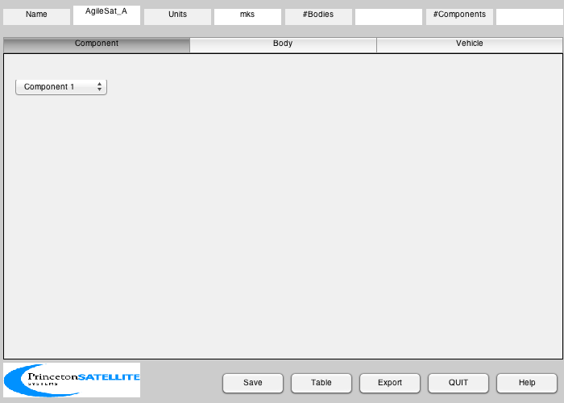
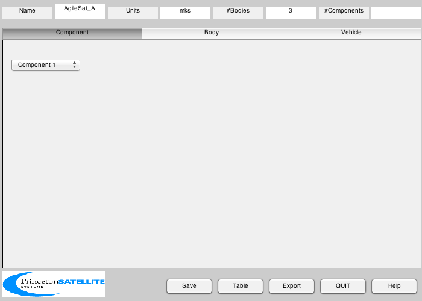
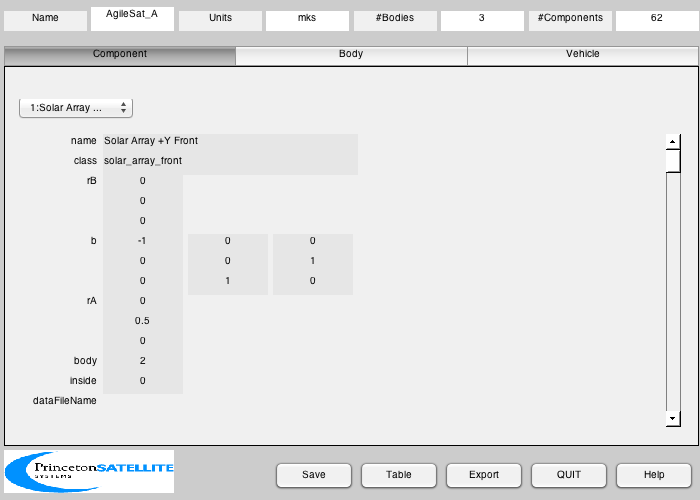
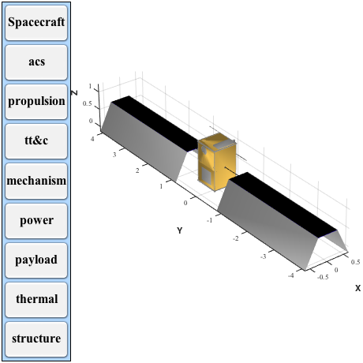

Design the Small Agile Satellite CAD model with solar arrays and propulsion
There are two variants. Variant A has 12 hydrazine thrusters, a radar dish and a rendezvous camera. Variant B has a telescope and 4 Hall thrusters. Exporting files is off by default, see the end of the demo.
Components:
GN&C ---- 1 Hall thruster or 12 hydrazine for variant A 1 PCU 2 Magnetic torquers 1 Xenon tank 1 Honeywell RWA Array 1 IMU 1 Magnetometer on boom 2 Star cameras 1 Radar for variant A
Communications -------------- 1 ISL 2 Omni antenna 1 High gain antenna
Payload ------- 1 Telescope Payload B 1 Radar dish Payload A
Power ----- 1 LiOn battery 2 Solarcon arrays
Data processing --------------- 1 Ethernet bus 1 RAD 750 processor (cPCI) 1 Interface board (cPCI) 1 Mass memory board (cPCI) 1 Command receiver (cPCI) 1 GPS receiver (cPCI)
Interface --------- 2 Umbilical connectors 1 Flange
Structure --------- Aluminum frame Honeycomb panels
------------------------------------------------------------------------ See also SHELSInterface, NRLArray, PanelFrame, ShapedStrut, PanelWithCutout, CompactPCIChassis, XenonTank, XenonTankSupport, BuildCADModel, CreateBody, CreateCADReport, CreateComponent, ExportCAD, ExportOBJ, Inertias, Frustrum, RWAArray, Eul2Mat, Mat2Q, QLVLH, U2Q ------------------------------------------------------------------------
Contents
%------------------------------------------------------------------------------- % Copyright (c) 2003, 2007 Princeton Satellite Systems, Inc. % All rights reserved. %------------------------------------------------------------------------------- clear mass; clear dI;
Variant A has thrusters, Variant B has Hall thrusters
%------------------------------------------------------- variant = 'A'; %------------------------------------------------------------------
Spacecraft macro properties
%------------------------------------------------------------------ % Default state data %------------------- r = 7000; v = sqrt(3.98600436e5/r); rECI = [r;0;0]; vECI = [0;v;0]; qLVLH = QLVLH( rECI, vECI ); q = [1;0;0;0]; omega = [0;-v/r;0]; % Constants %---------- cMToM = 0.01; inToM = 0.0254; panelThickness = 0.5*0.0254; % Maximum dimensions %------------------- % 45.31 less 1.5 in by 26 in by 42 in % The z-origin is the SHELS separation plane % Star Camera is 0.2 m across %---------------------------- coreX = 26*inToM; coreY = 26*inToM; coreZ = (45.31 - 1.5)*inToM; % Torque rod %----------- torqueRodLength = coreX*(21/23); torqueRodWidth = coreZ*(1/23); torqueRodDipole = 10; % Reference: Component Locations.xls %----------------------------------- mass.mass = 180; mass.cM = [0;0;0]; mass.inertia = Inertias( mass.mass, [coreX coreY coreZ], 'box', 1 ); % Telescope %---------- rTelescope = 4.5*inToM; lTelescope = 24*inToM;
Initialize
%----------- BuildCADModel( 'initialize' ); % Add spacecraft properties %-------------------------- BuildCADModel( 'set name' , ['AgileSat_' variant] ); BuildCADModel( 'set units', 'mks' ); BuildCADModel( 'set rECI' , rECI ); BuildCADModel( 'set vECI' , vECI ); BuildCADModel( 'set qLVLH', qLVLH ); BuildCADModel( 'set qECIToBody', q ); BuildCADModel( 'set omega', omega ); BuildCADModel( 'set mass', mass ); %------------------------------------------------------------------
Enter all component data
%------------------------------------------------------------------ % Solar arrays %------------- strutLength = 0.5; arrayLength = 3.28; arrayWidth = 0.57; panelLength = 0.82; panelWidth = 0.57; arrayY = coreY/2 + arrayLength/2 + strutLength; arrayMass = 9; nPanels = 4; bX = [ 1 0 0;0 0 -1;0 1 0]'; bY = [-1 0 0;0 1 0;0 0 -1]; % Reflectors %----------- theta = 1.122; lR = 0.82; reflX = panelWidth/2 + lR/2*cos(theta); reflY = arrayLength/2+strutLength; reflZ = -lR/2*sin(theta); % IMU %---- imuX = 0.05; imuY = 0.05; imuZ = 0.05; % SHELS Interface %---------------- [vF, fF, vPI, fPI, vSI, fSI] = SHELSInterface; zFlange = max(vF(:,3)); rFlange = max(vF(:,1)); % Array drives %------------- zSolarArray = zFlange + coreZ/2; %------------------------------------------------------------------
Create CAD Bodies
%------------------------------------------------------------------ % Core %----- m = CreateBody( 'make', 'name', 'Core' ); BuildCADModel('add body', m ); m = CreateBody( 'make', 'name', 'Solar Array 1', 'bHinge', struct( 'b', eye(3),... 'axis', 2 ), 'previousBody', 1, 'rHinge', [0;coreY/2;zSolarArray ] ); BuildCADModel('add body', m ); m = CreateBody( 'make', 'name', 'Solar Array 2', 'bHinge', struct( 'b', eye(3),... 'axis', 2 ), 'previousBody', 1, 'rHinge', [0;-coreY/2;zSolarArray ] ); BuildCADModel('add body', m ); % This creates the connections between the bodies %------------------------------------------------ BuildCADModel( 'compute paths' ); %------------------------------------------------------------------
Create CAD Components
%------------------------------------------------------------------ % Solar Array 1 %----------------------------------------------------------------------------------------------- m = CreateComponent( 'make', 'solar array front', 'z', panelLength, 'x', arrayWidth,... 'nZ', nPanels, 'nX', 1, 'dirZ', 1, 'inside', 0, ... 'theta', 0, 'electricalConversionEfficiency', 0.18, 'b', bY*bX,... 'rA', [0;strutLength;0], 'mass', arrayMass/2, 'cM', [0;0;0],... 'name', 'Solar Array +Y Front', 'body', 2, 'faceColor', 'solar cell' ); BuildCADModel( 'add component', m ); m = CreateComponent( 'make', 'solar array back', 'z', panelLength, 'x', arrayWidth,... 'nZ', nPanels, 'nX', 1, 'dirZ', 1,... 'theta', 0, 'b', bY*bX, 'inside', 0, ... 'rA', [0;strutLength;0], 'mass', arrayMass/2, 'cM', [0;0;0],... 'name', 'Solar Array +Y Back', 'body', 2, 'faceColor', 'black' ); BuildCADModel( 'add component', m ); m = CreateComponent( 'make', 'box', 'x', 0.01 , 'y', strutLength, 'z', 0.01,... 'b', eye(3), 'rA', [0; strutLength/2; 0], 'mass', 1, 'cM', [0;0;0],... 'name', 'Support', 'body', 2, 'faceColor', 'aluminum truss',... 'inside', 0); BuildCADModel( 'add component', m ); m = CreateComponent( 'make', 'box', 'x', lR, 'y', 0.01, 'z', arrayLength,... 'b', Eul2Mat([-pi/2 0 theta]), 'rA', [reflX; reflY; reflZ],... 'mass', 1, 'cM', [0;0;0], 'name', 'Reflector +Y Left',... 'body', 2, 'faceColor', 'aluminum', 'inside', 0 ); BuildCADModel( 'add component', m ); m = CreateComponent( 'make', 'box', 'x', lR , 'y', 0.01, 'z', arrayLength,... 'b', Eul2Mat([-pi/2 0 -theta]), 'rA', [-reflX; reflY; reflZ],... 'mass', 1, 'cM', [0;0;0], 'name', 'Reflector +Y Right',... 'body', 2, 'faceColor', 'aluminum', 'inside', 0 ); BuildCADModel( 'add component', m ); % Solar Array 2 %----------------------------------------------------------------------------------------------- m = CreateComponent( 'make', 'solar array front', 'z', panelLength, 'x', arrayWidth,... 'nZ', nPanels, 'nX', 1, 'dirZ', 1,'inside', 0, ... 'theta', 0, 'electricalConversionEfficiency', 0.18, 'b', bX',... 'rA', [0;-strutLength;0], 'mass', 10, 'cM', [0;0;0],... 'name', 'Solar Array -Y Front', 'body', 3, 'faceColor', 'solar cell' ); BuildCADModel( 'add component', m ); m = CreateComponent( 'make', 'solar array back', 'z', panelLength, 'x', arrayWidth,... 'nZ', nPanels, 'nX', 1, 'dirZ', 1,... 'theta', 0, 'b', bX','inside', 0, ... 'rA', [0;-strutLength;0], 'mass', 10, 'cM', [0;0;0],... 'name', 'Solar Array -Y Back', 'body', 3, 'faceColor', 'black' ); BuildCADModel( 'add component', m ); m = CreateComponent( 'make', 'box', 'x', 0.01 , 'y', strutLength, 'z', 0.01,... 'b', eye(3), 'rA', [0; -strutLength/2; 0], 'mass', 1,... 'cM', [0;0;0], 'inside', 0, ... 'name', 'Support', 'body', 3, 'faceColor', 'aluminum truss' ); BuildCADModel( 'add component', m ); m = CreateComponent( 'make', 'box', 'x', lR, 'y', 0.01, 'z', arrayLength,... 'b', Eul2Mat([pi/2 0 -theta]), 'rA', [reflX; -reflY; reflZ],... 'mass', 1, 'cM', [0;0;0],'inside', 0, ... 'name', 'Reflector -Y Left', 'body', 3,'faceColor','aluminum' ); BuildCADModel( 'add component', m ); m = CreateComponent( 'make', 'box', 'x', lR , 'y', 0.01, 'z', arrayLength,... 'b', Eul2Mat([pi/2 0 theta]), 'rA', [-reflX; -reflY; reflZ],... 'mass', 1, 'cM', [0;0;0],'inside', 0, ... 'name', 'Reflector -Y Right', 'body', 3,'faceColor','aluminum' ); BuildCADModel( 'add component', m ); %-----------------------------------------------------------------------------------------------
Core
%----------------------------------------------------------------------------------------------- % SHELS interface %----------------- m = CreateComponent( 'make', 'generic', 'vertex', vF, 'face', fF,... 'faceColor', 'aluminum','rA', [0;0;0], 'mass', 1,... 'name', 'Flange', 'body', 1, 'inside', 0 ); BuildCADModel( 'add component', m ); m = CreateComponent( 'make', 'generic', 'vertex', vPI, 'face', fPI,... 'faceColor', 'aluminum','rA', [0;0;0], 'mass', 1,... 'name', 'Power Interface', 'body', 1, 'inside', 0 ); BuildCADModel( 'add component', m ); m = CreateComponent( 'make', 'generic', 'vertex', vSI, 'face', fSI,... 'faceColor', 'aluminum','rA', [0;0;0], 'mass', 1,... 'name', 'Signal Interface','body', 1, 'inside', 0 ); BuildCADModel( 'add component', m ); % Frame %------ [v, f] = PanelFrame( coreX, coreY, panelThickness, panelThickness ); m = CreateComponent( 'make', 'generic', 'vertex', v, 'face', f,... 'faceColor', 'aluminum','rA', [0;0;zFlange+coreZ-2*panelThickness],... 'mass', 10, 'name', 'Top Frame', 'body', 1, 'inside', 0 ); BuildCADModel( 'add component', m ); v = ([1 0 0; 0 1 0; 0 0 -1]*v')'; m = CreateComponent( 'make', 'generic', 'vertex', v, 'face', f,... 'faceColor', 'aluminum','rA', [0;0;zFlange+2*panelThickness],... 'mass', 10, 'name', 'Bottom Frame', 'body', 1, 'inside', 0 ); BuildCADModel( 'add component', m ); z1 = zFlange+2*panelThickness; z2 = z1 + coreZ-2*panelThickness; c = []; c.x = [ -0.250 0 0 0.250 0.250 0 0 -0.250]*inToM; c.y = [ 0.375 0.375 0.125 0.125 -0.375 -0.375 -0.125 -0.125]*inToM; [v, f] = ShapedStrut( [0;0;z1], [0;0;z2], c ); angle = 0; sX = [1 1 -1 -1]; sY = [1 -1 -1 1]; for k = 1:4 angle = angle + pi/2; xF = sX(k)*(coreX/2 - panelThickness/2); yF = sY(k)*(coreY/2 - panelThickness/2); b = [cos(angle) sin(angle) 0;-sin(angle) cos(angle) 0;0 0 1]; vR = (b*v')'; m = CreateComponent( 'make', 'generic', 'vertex', vR, 'face', f,... 'faceColor', 'aluminum','rA', [xF;yF;0], ... 'mass', 10, 'name', ['z strut' num2str(k)], 'body', 1,... 'inside',0 ); BuildCADModel( 'add component', m ); end % Panels %------- panelName = {'+X' '-X/+Z' '+Y' '-Y' '+Z' '-Z' '-X/-Z'}; xLoc = (coreX - panelThickness)/2; yLoc = (coreY - panelThickness)/2; zLoc = (coreZ - panelThickness)/2; wX = coreX - 2*panelThickness; wY = coreY - 2*panelThickness; wZ = coreZ - 2*panelThickness; wH = wZ/2; zC = zSolarArray; zP = zSolarArray + wZ/4; zN = zSolarArray - wZ/4; th = panelThickness; rAP = [xLoc -xLoc 0 0 0 0 -xLoc ;... 0 0 yLoc -yLoc 0 0 0;... zC zP zC zC zFlange zFlange + coreZ zN]; dP = [th th wX wX wX wX th;... wY wY th th wY wY wY;... wZ wH wZ wZ th th wH]; for k = [3 4] m = CreateComponent( 'make', 'box', 'x',dP(1,k), 'y',dP(2,k), 'z',dP(3,k),... 'faceColor', 'gold foil', 'rA', rAP(:,k), 'mass', 10,... 'name', ['Panel ' panelName{k}], 'body', 1,... 'inside', 0 ); BuildCADModel( 'add component', m ); end % Panels with cutouts %-------------------- xW = [wZ wH wX wX wH]; yW = [wY wY wY wY wY]; b = { [0 0 1;0 1 0;-1 0 0] [0 0 1;0 1 0;-1 0 0] eye(3) eye(3) [0 0 1;0 1 0;-1 0 0] }; rStarCamera = 0.055; rA = [coreX/2 - .23; coreY/2 - 0.076/2 - panelThickness;coreZ - 0.076 - panelThickness]; c(1).x = -0.3-2*rStarCamera; c(1).y = coreY/2 - 0.08; c(1).r = rStarCamera; c(1).n = 10; c(2).x = -coreZ/4 + 3.3*panelThickness + rTelescope; c(2).y = -coreY/2 + 0.28 + 2*panelThickness + rTelescope; c(2).r = rTelescope; c(2).n = 20; c(3).x = 0; c(3).y = 0; c(3).r = rFlange; c(3).n = 10; c(4).x = -coreX/2 + 1.5*.076 + panelThickness; c(4).y = coreY/2 - 0.055 - panelThickness; c(4).r = rStarCamera; c(4).n = 10; c(5).x = 0; c(5).y = 0; c(5).r = 10*inToM; c(5).n = 4; k = [1 2 5 6 7]; for j = 1:5 [v, f] = PanelWithCutout( xW(j), yW(j), panelThickness, c(j) ); m = CreateComponent( 'make', 'generic', 'vertex', (b{j}*v')', 'face', f,... 'faceColor', 'gold foil', 'rA', rAP(:,k(j)),... 'mass', 10, 'name', ['Panel ' panelName{k(j)}], 'body', 1,... 'inside',0); BuildCADModel( 'add component', m ); end % Chassis %-------- [v, f, d] = CompactPCIChassis( 6 ); m = CreateComponent( 'make', 'generic', 'vertex', v, 'face', f, 'faceColor', [0 0.5 0.5],... 'rA', [0; -coreY/2 + d(2)/2 + 2*panelThickness; zFlange + 2*panelThickness + 0.25],... 'mass', 2, 'name', 'C&DH Box', 'body', 1, 'inside', 1 ); BuildCADModel( 'add component', m ); % Battery %-------- m = CreateComponent( 'make', 'battery', 'x', 0.25, 'y', 0.15, 'z', .25,... 'faceColor', [1 0 0],... 'rA', [0; -coreY/2 + 0.075 + 2*panelThickness; zFlange + 2*panelThickness + 0.125],... 'mass', 1, 'name', 'Battery',... 'body', 1, 'inside', 1 ); BuildCADModel( 'add component', m ); % PCU %---- if( variant == 'B' ) m = CreateComponent( 'make', 'box', 'x', 0.1, 'y', 0.1, 'z', .1,... 'faceColor', [1 0 1],... 'rA', [0; coreY/2 - 0.05 - panelThickness; zFlange + 2*panelThickness + 0.125],... 'mass', 1, 'name', 'Hall Thruster PCU',... 'body', 1, 'inside', 1 ); BuildCADModel( 'add component', m ); end % Fuel tank %---------- if( variant == 'B' ) tank = 'Xenon'; elseif( variant == 'A' ) tank = 'Hydrazine'; end [v, f] = XenonTank( 88 ); m = CreateComponent( 'make', 'generic','vertex', v, 'face', f,... 'faceColor', 'steel' ,'rA', [0;0;0.1],... 'name', [tank ' tank'],'inside',1); BuildCADModel( 'add component', m ); [v, f] = XenonTankSupport( sqrt(0.25*coreX^2 + 0.25*coreY^2) ); m = CreateComponent( 'make', 'generic','vertex', v, 'face', f,... 'faceColor', 'steel' ,'rA', [0;0;0.85],... 'name', [tank ' tank top'],'inside',1); BuildCADModel( 'add component', m ); m = CreateComponent( 'make', 'generic','vertex', v, 'face', f,... 'faceColor', 'steel' ,'rA', [0;0;0.11],... 'name', [tank ' tank bottom'],'inside',1); BuildCADModel( 'add component', m ); % Telescope %---------- [v, f] = Frustrum( rTelescope, rTelescope, lTelescope, 20, 0, 0 ); b = [0 0 1;0 1 0;-1 0 0]; rA = [-lTelescope/2;-coreY/2+0.28+2*panelThickness + rTelescope;coreZ - panelThickness - rTelescope]; m = CreateComponent( 'make', 'generic','b', b, 'vertex', v, 'face', f,... 'faceColor', 'aluminum' ,'rA', rA, 'name', 'Telescope',... 'inside',0 ); BuildCADModel( 'add component', m ); %%%%%%%%%%% %%% Sensors %%%%%%%%%%% % Star camera %------------ boresight = [1;0;0]; b = [0 0 1;1 0 0;0 -1 0]; rA = [coreX/2 - .23; coreY/2 - 0.08;coreZ - 0.076 - panelThickness]; m = CreateComponent( 'make', 'star camera', 'model', 'astro 5', 'boresight',[0;0;1],... 'b', b, 'rA', rA, 'name', 'Star Camera +X', 'body', 1, ... 'faceColor', 'aluminum','inside',0, ... 'qBToS',Mat2Q([0 0 1;0 1 0;-1 0 0]), 'catalogName', 'PolarStars.txt' ); BuildCADModel( 'add component', m ); boresight = [-1;0;0]; rA = [-coreX/2 + .076 + panelThickness;coreY/2 - rStarCamera - panelThickness;coreZ - 0.230]; b = [0 1 0;-1 0 0;0 0 1]; m = CreateComponent( 'make', 'star camera', 'model', 'astro 5', 'boresight',[0;0;1],... 'rA', rA, 'name', 'Star Camera +Z', 'b', b, 'body', 1,... 'faceColor', 'aluminum','inside',0, ... 'qBToS',U2Q([0;0;1], boresight), 'catalogName', 'PolarStars.txt' ); BuildCADModel( 'add component', m ); % IMU %---- r = 0.5*7.8*inToM; h = 5.2*inToM; dI.manufacturer = 'Honeywell'; dI.name = 'MIMU'; rIMU = [ coreX/2-r-2*panelThickness;... -coreY/2+r+2*panelThickness;... coreZ - h - panelThickness]; m = CreateComponent( 'make', 'cylinder', 'rUpper', r, 'rLower',r,'h',h,... 'inside', 1,'deviceInfo',dI,... 'rA', rIMU, 'name', 'IMU', 'body', 1, 'faceColor', [0 0 1] ); BuildCADModel( 'add component', m ); % Omni %----- lOmni = 0.4; m = CreateComponent( 'make', 'ground link antenna', 'x',0.01,'y',lOmni,'z',0.01,... 'rA', [coreX/2;coreY/2+lOmni/2;coreZ + zFlange],... 'name', 'Omni', 'body', 1, 'faceColor', 'aluminum',... 'inside',0 ); BuildCADModel( 'add component', m ); lMagnetometer = 0.4; m = CreateComponent( 'make', 'magnetometer', 'x',0.01,'y',lMagnetometer,'z',0.01,... 'rA', [coreX/2;-coreY/2-lMagnetometer/2;coreZ + zFlange - 0.3],... 'name', 'Magnetometer', 'body', 1, 'faceColor', 'steel',... 'inside',0 ); BuildCADModel( 'add component', m ); % High gain antenna %------------------ h = 2*sqrt(0.5*(10*inToM)^2); m = CreateComponent( 'make', 'box', 'x', 0.05, 'y', 1.07*h, 'z', h, 'inside', 1,... 'rA', [-coreX/2 + 0.025; 0; coreZ/4 + zFlange],... 'name', 'HGA', 'body', 1, 'faceColor', 'aluminum' ); BuildCADModel( 'add component', m ); % Camera %------- m = CreateComponent( 'make', 'camera', 'unitVector',[0;0;1],... 'rA', [coreX/2-0.04; -coreY/2+0.04; coreZ],... 'name', 'Camera','inside',0,... 'body', 1, 'faceColor', 'aluminum' ); BuildCADModel( 'add component', m ); %%%%%%%%%%%%% %%% Actuators %%%%%%%%%%%%% h = 2*panelThickness + 0.125; hZ = 2*panelThickness + 0.11; m = RWAArray( 'hr04', pi/4, [.25 .22], eye(3), [-coreX/2 + h;-coreY/2 + h;coreZ - hZ], 1 ); BuildCADModel( 'add component', m ); % Array drives %------------- m = CreateComponent( 'make', 'single axis stepper drive', 'inside',0,... 'rA', [0; coreY/2-.12; zSolarArray ], 'name', 'Drive +Y',... 'body', 1, 'faceColor', [0.6 0.6 0.6],... 'unitVector',[0; 1; 0],'drivenBody',3); BuildCADModel( 'add component', m ); m = CreateComponent( 'make', 'single axis stepper drive','inside',0, ... 'rA', [0; -coreY/2+.12; zSolarArray ], 'name', 'Drive -Y',... 'body', 1, 'faceColor', [0.6 0.6 0.6],... 'unitVector',[0; -1; 0],'drivenBody',3); BuildCADModel( 'add component', m ); % X Torquer %---------- m = CreateComponent( 'make', 'magnetic torquer',... 'x', torqueRodLength, 'y', torqueRodWidth, 'z', torqueRodWidth,... 'faceColor', [0 0.5 0],... 'residualDipoleFraction', 0.00, 'dipole', [torqueRodDipole;0;0],... 'rA',[0;coreY/2 - 2*panelThickness - torqueRodWidth/2;zFlange + 0.4] , ... 'mass', 1, 'name', 'Torque Rod X', 'body', 1, 'inside', 1 ); BuildCADModel( 'add component', m ); % Y Torquer %---------- m = CreateComponent( 'make', 'magnetic torquer',... 'x', torqueRodWidth, 'y', torqueRodLength, 'z', torqueRodWidth,... 'faceColor', [0 0.5 0],... 'residualDipoleFraction', 0.00, 'dipole', [0;torqueRodDipole;00],... 'rA',[coreX/2 - 2*panelThickness - torqueRodWidth/2;0;zFlange + 0.4],... 'mass', 1, 'name', 'Torque Rod Y', 'body', 1, 'inside', 1 ); BuildCADModel( 'add component', m ); % Thrusters %---------- if( variant == 'B' ) m = CreateComponent( 'make', 'hall thruster', 's', [0.214 0.082],... 'name', 'Hall thruster', 'body', 1, 'rA', [0;0;zFlange], ... 'exhaustVelocity', 14000, 'unitVector', [0;0;1],... 'positionVector', [0;0;zFlange], 'thrust', 0.011,... 'efficiency',0.6, 'inside', 0 ); BuildCADModel( 'add component', m ); elseif( variant == 'A' ) uECoefficient.iSP = [120 110]; uECoefficient.pulsewidth = 2; thrustCoefficient = 1/(6895*350); % 1/pressure zBase = 1.5*inToM; angle = pi/4; s = sin( angle ); c = cos( angle ); e = 0.6; u = [ 0 0 0 0 -1 -1 1 1 0 0 0 0;... -s s -s s 0 0 0 0 0 0 0 0;... -c -c -c -c 0 0 0 0 1 1 1 1]; r = [ -1 1 1 -1 1 1 -1 -1 1 1 -1 -1;... 1 -1 1 -1 1 -0.85 0.85 -1 1 -1 -1 1;... e e e e 0.8*e 0 0 0.8*e 0 0 0 0]; r(3,:) = zBase + coreZ*r(3,:); r(1:2,:) = (coreX/2-2*panelThickness)*r(1:2,:); r = r + 0.130*u; for k = 1:8 m = CreateComponent( 'make', 'hydrazine thruster', 'model', 'mr-103c', ... 'name', sprintf('Thruster %i',k), 'body', 1,... 'unitVector', u(:,k), 'rA', r(:,k), 'inside', 0, ... 'uECoefficient', uECoefficient, 'thrustCoefficient',thrustCoefficient,... 'positionVector', r(:,k), 'minimumPulsewidth', 0.02,... 'valveHeaterPower', 8, 'pressureNominal',350*6895 ); BuildCADModel( 'add component', m ); end for k = 9:12 % 4N thrusters m = CreateComponent( 'make', 'hydrazine thruster', 'model', 'mr-111c', ... 'name', sprintf('Thruster %i',k), 'body', 1,... 'unitVector', u(:,k), 'rA', r(:,k), 'inside', 0, ... 'uECoefficient', uECoefficient, 'thrustCoefficient',4/thrustCoefficient,... 'positionVector', r(:,k), 'minimumPulsewidth', 0.02, 'valveHeaterPower', 8, 'pressureNominal',350*6895 ); BuildCADModel( 'add component', m ); end end % GPS Receiver %------------- m = CreateComponent( 'make', 'gps receiver', 'x', 0.5000, 'y', 0.2100, 'z', 0.0700,... 'rA', [coreX/2-.28;-coreY/2+.12;coreZ + zFlange],... 'name', 'GPS Receiver', 'body', 1, 'faceColor', 'aluminum',... 'inside', 1 ); BuildCADModel( 'add component', m ); % State Sensor %------------- m = CreateComponent( 'make', 'state sensor', 'x', 0.5000, 'y', 0.2100, 'z', 0.0700,... 'rA', [coreX/2-.28;-coreY/2+.12;coreZ + zFlange],... 'name', 'State Sensor', 'body', 1, 'faceColor', 'aluminum',... 'inside', 1 ); BuildCADModel( 'add component', m );
Add subsystems
%--------------- BuildCADModel( 'add subsystem', 'acs', {'gps receiver', 'magnetometer','imu','torque','rwa', 'esa', 'css', 'state', 'camera','tracker'} ); BuildCADModel( 'add subsystem', 'propulsion', {'hydrazine thruster', 'thruster','tank'} ); BuildCADModel( 'add subsystem', 'tt&c', {'C&DH', 'omni', 'signal','processor'} ); BuildCADModel( 'add subsystem', 'mechanism', {'drive'} ); BuildCADModel( 'add subsystem', 'power', {'solar array', 'reflector', 'battery', 'power'} ); BuildCADModel( 'add subsystem', 'payload', {'telescope','HGA','memory'} ); BuildCADModel( 'add subsystem', 'thermal', {'radiator', 'heater', 'thermistor'} ); BuildCADModel( 'add subsystem', 'structure', {'support', 'flange', 'frame', 'strut', 'panel'} );
Get the finished model
%----------------------- g = BuildCADModel( 'get cad model' ); BuildCADModel( 'show spacecraft' ) %------------------------------------------------------------------
Export - off by default
%------------------------------------------------------------------ if( 0 ) ExportOBJ( g, ['AgileSat_' variant] ); ExportCAD( g, ['AgileSat_' variant] ); CreateCADReport( g, 'html', 'SASReport' ); end %-------------------------------------- % PSS internal file version information %-------------------------------------- % $Date$ % $Id: 54069ded867e37fce10150a224534652e19ae72c $